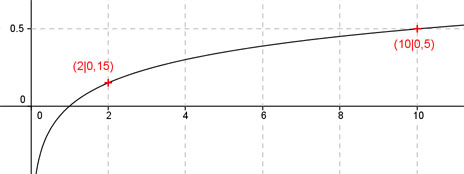

Aufgabe 86 Ergänzen Sie die Wertetabelle für den Graphen: y = lg x0,5 x 2 10 y 0,15 0,5 f(10) = lg 100,5 = 0,5 f(x) = 0,15 eingesetzt : 0,15 = lg x0,5 0,15 = lg x0,5 0,15 = 0,5 * lg x |:0,5 lg x = 0,3 --> x = 100,3 = 2 gerundet 